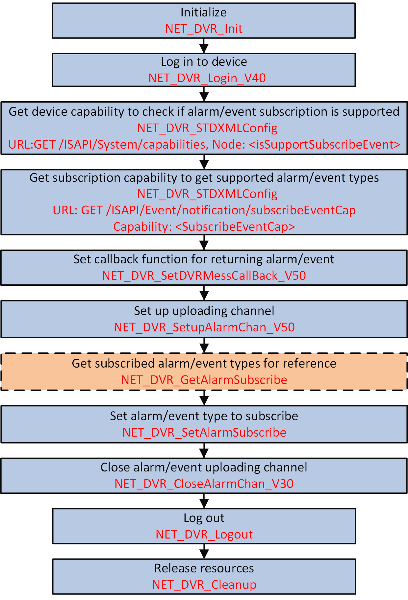

For arming mode, the platform will connect to the devices automatically and
send commands to the devices for uploading alarm/event information when the alarm is
triggered or event occurred. To reduce the CPU and bandwidth usage of platform, and improve
the device processing performance, the platform can subscribe alarm/event types to receive
alarm/event information as required.
-
Make sure you have called NET_DVR_Init to initialize the development environment.
-
Make sure you have called NET_DVR_Login_V40 to log in to the device.
-
Make sure you have configured the alarm/event parameters, refer to the
typical alarm/event configurations for details.

Figure 1 Programming Flow of Subscribing Alarm/Event in Arming Mode
-
Call NET_DVR_STDXMLConfig to pass through the request URL: GET
/ISAPI/System/capabilities for getting device capability to check if alarm/event subscription is
supported.
The device capability is returned in the message XML_DeviceCap by the output parameter (lpOutputParam)
pointer.
If the node <isSupportSubscribeEvent> is also returned in the message
and its value is "true", it indicates that alarm/event subscription is
supported by device, and you can continue to perform the following steps;
Otherwise, alarm/event subscription is not supported, please end
the task.
-
Call NET_DVR_STDXMLConfig to pass through the request URL: GET
/ISAPI/Event/notification/subscribeEventCap for getting subscription capability, which contains supported alarm/event
types.
The alarm/event subscription capability is returned in the
message XML_SubscribeEventCap by the output parameter (lpOutputParam)
pointer.
-
Call NET_DVR_SetDVRMessageCallBack_V50 to set callback function for returning alarm/event information or
subscription failed information.
Note:
-
If the configured alarm is triggered or event
occurred, the alarm/event information will be uploaded by device
and returned in the callback function. You can view the
alarm/event and do some processing operations.
-
To receive different types of alarm/event
information, the parameter lCommand (data type to be uploaded) in the
configured callback function should be different (refer to
Supported Alarm/Event Types for details).
-
To receive the subscription result (subscription
failed), the parameter lCommand
(data type to be uploaded) in the configured callback function
should be set to "COMM_ALARM_SUBSCRIBE_EVENT". And the result is
returned in the message XML_SubscribeEventResponse
-
Call NET_DVR_SetupAlarmChan_V50 to set up alarm/event uploading channel.
- Optional:
Call NET_DVR_GetAlarmSubscribe to get subscribed alarm/event types for reference.
-
Call NET_DVR_SetAlarmSubscribe to set alarm/event type to subscribe.
-
Call NET_DVR_CloseAlarmChan_V30 to close alarm/event uploading channel and finishing receiving.
Call NET_DVR_Logout and NET_DVR_Cleanup to log out and release resources.